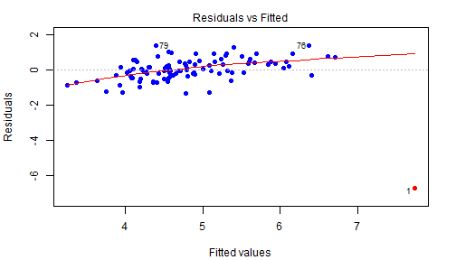

The Shiny application Developing Data Products has been designed to provide an interactive way to illustrate some of the concepts in the Coursera course Regression Models.
It focuses on the content of the lecture on Residuals, diagnostics, variation, and the related information in the swirl library Regression Models Residuals Diagnostics and Variation.
The application is accessed at URL http://michaelwpope.shinyapps.io/DevelopingDataProducts
Two sliders allow the user to set the x and y coordinates of a new point to be added to a set of randomly-generated points with an existing dependent relationship.
One of the plots presented by the application is a Residual plot showing the differences between the points in the dataset and the least squares line of best fit, highlighting the user-defined outlier.

The Developing Data Products application provides an interactive way to see the effect of a single additional point on a set of data points, and demonstrates some of the influence measures used in data analysis and their use in the R programming language.
This simple application demonstrates the potential of the Shiny toolset to assist with illustrating underlying concepts of data analysis.